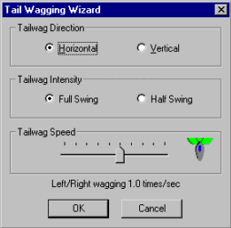

4.0 Motion Editing
Motion files tell AIBO how to control its servos -- where to put them,
and when. Skitter shows the "where & when" for each servo as
a black horizontal line. The small blue tabs (called
keyframes), indicate points where the positions change.
4.1 Motion Files & Keyframes
AIBO tracks movement
using keyframes. A keyframe
is a snapshot of AIBO's servo positions (ie: head,
shoulder,
knees, etc...). Keyframes tell AIBO where all its servos
should be, and when. AIBO smoothly moves servos
from one keyframe to the next, as it performs a motion.
A motion file always has at least two keyframes -- the first &
last. There can never be zero or one keyframes. The
start/stop
keyframes are special, since AIBO expects them to contain a standard
pose (sleep, sit, stand, etc...). Therefore, they cannot be
edited directly.
|
AIBO supports up to 250 seconds of
custom motion (over 15000 keyframes) in a motion file.
Note keyframes are always marked with a blue pointed tab in the ruler
bar.
|
 |
4.2 Navigating Motion Files
An orange marker bar shows the current time position.
Left-clicking
in the ruler or data pane, moves the marker. |
|
|
|
Click-n-drag
in the ruler bar (above the data pane), and a green selection marker
appears at the starting point. Skitter highlights between the
markers & changes any included keyframe tabs green. All
servos
are selected.
|
|
|
|
Click-n-drag in the data pane
(below the ruler bar), to select a range of servo data between the two
markers. Special effects only affect selected servos.
|
|
|
|
| In the upper-left corner of
motion editor, is the 3D preview
of AIBO. It shows AIBO servo settings at the current time
position (the orange marker). |
 |
4.3 Creating Keyframes
There are several ways to make keyframes.
First, position
the orange marker bar where you want a keyframe. Next, choose
one of the following:
- Press Ctrl+K, or...
- Double click in the ruler bar, or...
- Select the "Edit->Create Keyframe" menu
option
|
Skitter calculates the servo positions under the orange
marker, and creates the keyframe.
4.4 Moving & Deleting Keyframes
|
Moving
keyframes is easy. Select a keyframe tab in the ruler bar (so it
turns green), then click-n-drag the tab marker to adjust the spacing
between keyframes. Note: It does not create new keyframes.
Alternatively,
you can move a keyframes by inserting/deleting time before
it. Position the orange marker bar before a keyframe,
and use the [INSERT]
or [DELETE] keys.
|
 |
Note: If you hit [DELETE]with
the marker on a keyframe (tab marker highlighted green), that keyframe
is deleted.
4.5 Edit Servo Positions
|
Skitter offers a variety of ways to edit servo
positions.
First, click on a servo line at the location you want to change.
An
edit diamond appears under the mouse.
Pick one of the following methods to alter the servo position:
- Use the Up/Down arrow keys -or-
- Move the edit diamond with the
mouse -or-
- Press [ENTER] and type a
number using the keyboard.
|

|
4.5.1 Editing From Keyboard
The edit diamond turns black during keyboard editing
(for
clarity). The value is edited in the current value box,
found after the servo name.
4.5.2 Create Keyframe from Editing
If you select a location between existing keyframes,
editing (with any of the techniques mentioned above) creates a
new keyframe.
4.6 Standard Poses
You can use a standard pose anywhere you like, including
the first & last keyframes.
From the Motion menu, select "Set Pose". The following
options
are available. ERS-7 owners review the ERS-7 Skit Guidelines.
- Sleep Position
- Sit Position
- Stand Position
- Baby Position
- Belly Position
- Sleep Wide
- Sleep Flat
- Sit Wide
- Sit Flat
|
(normal sleep or down position)
(normal sit position)
(normal stand position)
(legs pointing out away from body)
(rear legs pointing out away from body)
(sleep position, with rear legs flared out to the side)
(sleep position, with rear legs spread out flat on floor)
(sit position, with rear legs flared out to the side)
(sit position, with rear legs spread out flat on floor) |
These are the standard built-in poses that AIBO
knows.
Once a pose is copied into a keyframe, you can customize it further
(except
for the first/last keyframes).
4.7 Servo Speed Limits
| AIBO can wear out prematurely,
overheat, or even damage
servos that
move too fast.
Skitter monitors for such situations, and
highlights
them.
A transition turns yellow when above the speed limit, and red if
excessively
fast (more than 10% over). Skitter prompts when
saving/testing files with excessive speed violations.
It is HIGHLY recommended you fix violations yourself manually,
or let Skitter do it automatically (usually there isn't a noticeable
change). |
 |
4.8 Smooth Motion Servos
Smoothing
makes a servo move in a straight line, between the start & stop
times. Keyframes are updated to match the changes.
In the example below, the highlighted servo is
smoothed. Between times 20 and 70, four keyframes are
changed. The result is a clean transition from the start time to
the stop time.
Before
|
After
|

|
|
4.9 Mirror Motion Left/Right
Mirroring a motion file left/right (or part of one) is
an easy way
to increase variety in your AIBO personalities. DogsLife
has
several performances identical, except mirrored left to right.
Movement on the left & right sides of AIBO are
swapped.
4.10 Reverse Motion (play in reverse)
Reversing a motion (or part of one) is helpful when
working up complicated
action files. You can have AIBO "unwind" some sequence of
steps required to get it into a position.
4.11 Scale Motion (change how long it
takes finish)
Scaling makes motions play faster or
slower. It's easier to watch all the small details on slow
motions. Once finished, you
can scale it up to speed.
One particular application is keeping sync with sound
files.
AIBO unfortunately isn't accurate at keeping time with sound,
especially "busy" MIDI
files.
Sometimes there is drift from what Skitter estimates, and the sound
AIBO
actually produces. The variations aren't easy to
predict. To compensate, scale motion files into
keeping
sync with the music. |
|
4.12 Mouth Wizard
For AIBO's with mouths (110, 210 & 7) the mouth
wizard generates automatic mouth movement from sound files (MIDI or
Wave). Mouth movement should be added after other leg & head
movements are complete. The wizard typically creates -many- additional
keyframes and complicates
editing thereafter.
The wizard supports a variety of
common
settings, for horizontal & vertical
tail wagging.
The
"mouth speed" setting controls how quickly the mouth is
opened/closed. The "sound level" specifies the threshold at
when the mouth should open or close. The wizard updates the
motion in real-time for previewing, since selecting the sound level is
very dependent on the sound file.
Before starting the wizard, select a time range to receive mouth
movement (otherwise the entire motion will be
affected).
From the Motion Menu, select "Mouth Wizard".
Select your preferences, and sit back while Skitter does the work.
|
|
4.13 Tailwag Wizard
For AIBO's with tails (110, 210 & 7) the tail
wagging wizard (as the name implies) takes
all the pain out of wagging AIBO's tail. Tail wagging
should be the
very last thing you add to a motion. The wizard typically
creates -many- additional keyframes and complicates
editing thereafter.
The wizard supports a variety of
common
settings, for horizontal & vertical
tail wagging.
The intensity setting controls how far the
tail moves. The speed range supports from nothing, to the maximum
possible speed for the tail servos. The image next the
speed slider previews the results.
Before starting the wizard, select a time range to receive tail wagging
(otherwise the entire motion will be affected).
From the Motion Menu, select "Tailwag Wizard".
Select your preferences, and sit back while Skitter does the work.
|
 |
4.14 Customize First/Last Keyframes
Customizing the first/last keyframes is an advanced
override.
Only use once SURE
you understand everything below. Please read this section
fully and exercise caution.
4.13.1 Custom Poses Overview - Please Read
Custom start/stop poses are very useful,
and safe when used properly. Dogslife uses custom poses in
its various games to great effect (for example). Here are a
few facts you should know:
- AIBO doesn't track its servos very well between
motions (fortunately).
- Motion files tell AIBO the start and stop poses,
separately from the servo positions. These are text descriptions
(ie: "stand" or "sit"). Skitter updates these text descriptions
when you select standard poses for the first/last keyframes.
- AIBO uses the start/stop text descriptions for
automatic transitions. These occur before a motion is
played, if the previous motion ended in a different pose.
For example, assume the first motion ended sitting, but the second
starts standing. AIBO automatically performs the sit-to-stand
transition before starting the second motion.
- AIBO doesn't do anything before a motion, if its
start-pose matches the previous motion stop-pose.
- AIBO never verifies the pose text descriptions match
the servo positions.
- Therefore, if you guarantee AIBO doesn't need to do
anything between motions, the servos can be in any pose you like.
CAUTION!!! If you forget AIBO is in a
custom pose, and it suddenly tries transitioning into another pose, bad
things happen. AIBO might snap its servos at maximum speed,
or legs could collide, etc... It is NOT healthy.
Essentially, we take over responsibility
for managing transitions. We fake out AIBO, using the same
standard pose in all motions with our custom poses.
You need to provide two special
skits. One transitioning INTO the
custom pose (from a standard pose), and one transitioning FROM the
custom pose (back to a standard pose). ie: The
DogsLife rock-paper-scissor game has
"rps-intro" & "rps-close".
4.14.2 Custom Poses
Step-by-Step
- Pick one standard pose for both start/stop
frames.
- All skits containing your custom pose must use that
standard pose.
- When
creating a new skit for custom poses, step one is changing the
first/last keyframes into that standard pose. Skitter
changes the start/stop pose text descriptions only when you pick
standard poses. If the start/stop text descriptions aren't
right AIBO might decide to perform automatic transitions.
- Create an intro-skit to transition from the standard
pose into your custom pose.
- Create an exit-skit to transition from your custom
back to the standard pose.
- Create custom-pose skits (as many as you like).
4.14.3 Custom Poses Used Safely
Your
behavior or RCode, MUST guarantee the intro-skit plays first,
custom-poses in-between, and the exit-skit after. One easy
way is using a wrapper. ie:
:GameWrapper
PLAY ACTION GAME_INTRO // move into custom pose
WAIT
CALL PlayGame
PLAY ACTION GAME_EXIT // move out of custom pose
WAIT
RET:1
:PlayGame
//
// use various custom-pose skits at will here
//
.
.
.
// return to wrapper once game over
RET:1
|
The intro-skit is performed before the game, and the exit-skit once the
game finishes.
4.15 Converting AIBO Platforms
Skitters supports changing a performance
from one AIBO platform into another. ie: 210 into 310 (or
visa-versa). Servos are translated, removed, or added as
necessary. From "Edit Menu", select "Convert
Platform", then the target (110, 210, 220, 310, or 7).
Conversion
is a lossy process. If you convert a 210 performance to a 310,
then back into 210 you lose information. Motions
for the mouth, ears & tail are lost. Detail LED information
is gone also. Range of motion can be affected as well.
Platform conversions cannot be undone. Therefore, before
converting a
performance, save it. After converting, save again using a
new action
name (assuming you want both versions).
4.15.1 Special Cases
Skitter has special case processing when converting from the 210 into
220. Mouth, ear, and tail motions translate into visual LED
patterns. Mouth motion converts into face & headlight
LED's. Ears converts into the mouth LED (over the chin
button). Tail motions convert into the tail-fan & tail
LED's.
There is also special case processing when converting motions into
310. The 310 is more "tippy" because of its larger head,
especially in sit-up actions (where AIBO raises its front paws off the
floor). Skitter attempts to identify these situations and
adjusts the motion to use more stable pose.
4.16 Undo/Redo Changes to Motion
If you make a change that doesn't work out, simply undo
it
(Edit Menu->Undo). Skitter supports unlimited undo (ie:
all edits since the motion file was loaded, or last platform
conversion.). If you undo too
much, you can reapply changes (Edit Menu->Redo).
Warning! Changing AIBO platforms currently cannot
be undone.
Keyboard shortcuts of Ctrl+Z (Undo) and Ctrl+Y (Redo)
are available.
4.17 The Splitter Bar
The vertical splitter bar allows two views of the motion
data
at once. To adjust the position of the splitter bar, select:
"Window Menu -> Split Window".
You can
move the splitter at any time. To dock the splitter bar
(hide it), simply drag the
splitter to its left-most position.
|
{kind=link}
{kind=link}
{kind=link}
{kind=link}
{kind=link}
{kind=link}
{kind=link}
{kind=link}
{kind=link}